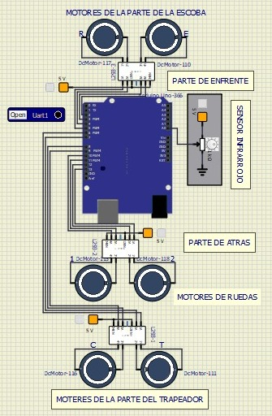
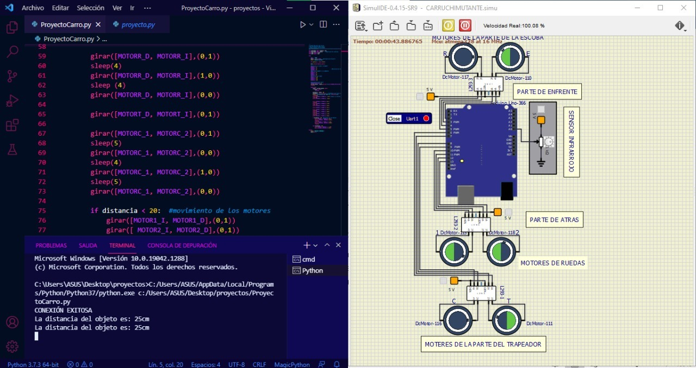

Centro de Bachilerato Tecnológico Industrial y de Servicios N° 85
"José María Liceaga"
FaciClean
Autores:
- Márquez Mexicano Juan Carlos
- Martínez Benítez Dania Jazmín
- Méndez Infanzón Priscila Noemí
Asesor técnico:
- Ing. José Alejandro Leyva Medina
Asesor metodológico:
- Ing. Amarairany Lizet Rosas Carrasco
Grado y grupo: 5BTV Y 5ATM
Proyecto tecnológico Alidet
Introducción
El proyecto el cual se presentará a través de este plan de investigación es acerca de un carro limpiador capaz de barrer y trapear, la idea de la elaboración de este proyecto surgió a partir de las diversas situaciones que han estado afectando al planeta como lo son la contaminación a causa de la basura que se encuentra en los suelos que desde hace más de 20 años nos afecta, es una de las causas principales por la que el mundo se desmorona poco a poco, los causantes de todo esto somos nosotros los seres humanos que tenemos poca conciencia, ya que no nos importa tirar una pequeña basura y pensamos que no pasa nada, y desconocemos el daño que todo esto causa.
Otra situación que está pasando en estos tiempos es la contingencia sanitaria debido a un virus que apareció en China en diciembre del 2019 y provoca una enfermedad llamada COVID-19, que se ha extendido por el mundo y fue declarada pandemia global por la Organización Mundial de la Salud.
La limpieza del hogar además de que ayuda a evitar la contaminación, es un acto de higiene que cada una de las personas debemos poner en práctica.
Con la nueva normalidad esto se vuelve aún más necesario ya que la higiene es fundamental para prevenir enfermedades y a su vez, estimular unos hábitos de vida saludable que ayudarán a potenciar el bienestar. Un hogar limpio y ordenado es un espacio en el que es más fácil disfrutar y compartir actividades y reuniones con la familia. Un hogar limpio nos hace sentir a gusto el tiempo que pasemos en casa, ya sea para comer, descansar, dormir, trabajar, etc.
Planteamiento del problema
La contaminación es un problema que nos afecta desde hace años, es uno de los principales causantes de enfermedades en la población, además de esto, la flora y la fauna también se ve afectada por este mismo problema. Hablando más específicamente de la superficie de los suelos, que son lugares demasiado usados en el día a día, ejemplo de esto son las habitaciones de una casa, el suelo de una cocina, el suelo de un estudio de danza o de las aulas de las escuelas, es donde termina una gran parte de basura generada por nosotros mismos.
Al realizar la limpieza en una habitación, el suelo recibe menos atención a diferencia de otros lugares. La mayoría de personas no le toman importancia a la limpieza de este e incluso lo toman como un problema menor. No importando de que material sean siempre se ensucia aparte de que a simple vista no se observe dicha suciedad, y si no son limpiados de manera correcta pueden tener graves repercusiones a la salud.
Algunas repercusiones pueden ser causa tipos de alergias o infecciones especialmente en personas con problemas respiratorios o con bajas defensas, debido la enorme cantidad de gérmenes que se pueden encontrar en ellos, entre estos pueden estar ácaros de polvo, pelo de mascotas, bolas de papel, pelusas, moho o incluso migajas de comida.
Los suelos sucios también puede ser la causa de accidentes, ya que, al estar cubierto por algún tipo de líquido, aceite o hasta el café que se derramó, hace que el suelo se vuelva una superficie resbalosa y si no se tiene precaución, se provocan resbalos, tropiezos o incluso caídas graves. Afectando en las actividades que realizamos diariamente en el hogar, negocio o en las aulas de clases.
Además de todo esto un suelo sucio también afecta la imagen de un negocio o de manera estética, porque al verse sucio, da entender que el lugar cuenta con poca higiene.
Justificación de la investigación
Este prototipo tiene la intención de reducir la suciedad, las bacterias y gérmenes que se encuentra en la superficie de los suelos y a su vez eliminando los problemas que puede desencadenar un suelo sucio.
Con esto se reduciría los daños a la salud en las personas con problemas respiratorios o bajas defensas, así como también la suciedad que se genera en estos suelos para que no terminen en la calle o cualquier otro lugar en donde pueda dañar la flora y fauna del entorno.
Esto también tendría un beneficio en los planteles educativos o negocios debido a que por la contingencia sanitaria del COVID 19, los trabajadores de limpieza quedan más expuestos a los gérmenes que se encuentran en los suelos, por lo tanto, podrían contagiarse de forma más rápida.
Este carrito tiene la intención de automatizar el proceso de limpieza, para que así el personal encargado de intendencia no tenga que exponerse al virus o cualquier otra bacteria que pueda encontrarse en esta superficie.
Otro de los beneficios que puede dar este prototipo seria el problema ya dicho antes sobre las caídas, los suelos al estar limpios serian menos riesgosos para las personas que caminan por ellos.
Tanto el hogar, aulas de clase o negocios, los suelos deben ser limpiados constantemente para así evitar todos los problemas ya mencionados, tener un lugar de trabajo o relajación más limpio nos ayuda a tener un mejor desempeño y experiencia a la hora de realizar alguna tarea o de visitar algún establecimiento de comida.
Hipótesis
¿El uso del Faciclean en los suelos de las aulas escolares, reducirá las probabilidades de contraer el virus del COVID-19? El uso de este carro desinfectante en las aulas reduciría el contagio del COVID-19 dado que, al ser un prototipo automatizado, solamente se coloca en el área que se desea limpiar y se enciende. No requiere que el personal tenga que supervisarlo exponiéndose al virus que podría encontrarse en el suelo. Además de que el suelo del aula estaría en constante limpieza, por lo que si a un estudiante se le cae un objeto es menos probable que este pueda albergar el virus por causa de la caída.
Al ser un prototipo diseñado para la limpieza su mantenimiento no requiere de un grado alto de dificultad, puesto que solamente sería vaciar la caja de la basura del carrito por las dos pestañas que tiene para que así no se tenga contacto con la basura, después de esto limpiar la caja que se vacío y por ultimo lavarse las manos de manera correcta. Y por último rellenar de nuevo el desinfectante para la parte del trapeador.
El aula de clases se volvería un lugar un poco más seguro, gracias al Faciclean y si a esto le sumamos las medidas sanitarias, los contagios podrían reducirse.
Objetivo general
Desarrollar un robot de limpieza que ayude en la eliminación de virus o bacterias que se encuentran en los suelos de hogares, negocios o aulas escolares y otros espacios públicos.
Objetivos especifícos
- Hacer un circuito para el prototipo
- Realizar una programación para las funciones del circuito.
- Crear el diseño en tercera dimensión del prototipo del carro.
- Programar el carro para que opere de manera autónoma.
- El uso del carro pueda reducir la cantidad de suciedad en los suelos.
Marco teórico
Las investigaciones previas sobre métodos de desinfección que sirvieron para el desarrollo del carro desinfectante Faciclean son las siguientes:
Para selección de los productos de limpieza que pueden usarse en el carro desinfectante Faciclean se tomaron los recomendados por la Organización Mundial de la Salud (2020) son los productos a base de hipoclorito se presentan en forma de líquido, sólido o polvo. Estas presentaciones se disuelven en agua para crear una solución diluida de cloro la cual se activa y actúa como antimicrobiano.
Con esta misma investigación hecha por la Organización Mundial de la Salud (2020) se decidió el usar un carro desinfectante que limpie de forma directa sobre la superficie, ya que en el caso de la COVID-19 se demostró que la desinfección mediante fumigación o nebulización de las superficies no es eficaz para eliminar los virus contaminantes.
Con base al Manual de Limpieza para Escuelas más Saludables (CDC, 2009) los desinfectantes son pesticidas registrados por la EPA diseñados para matar o desactivar microbios y/o gérmenes, y que cuyo uso excesivo o incorrecto puede matar las bacterias saludables y también hacer que cepas de patógenos se tornen resistentes a las enfermedades. Además, muchos desinfectantes contienen ingredientes tóxicos que pueden acarrear riesgos para los ojos, irritación respiratoria o cutánea y demás efectos dañinos sobre la salud.
De entre todas las opciones manuales y automatizadas para desarrollar un método de limpieza en superficies infectadas por el Covid 19, se decidió por un carrito automatizado pues de con base a los estudios hechos por Andrade, Bastidas y Benavides (2020) teniendo conocimientos de la forma de vida de la sociedad actual y siendo conscientes de las consecuencias que conlleva hacer la limpieza manualmente en casa, oficina, o escuelas como es: tiempo, dolor de espalda, cansancio, estrés; el uso de métodos autónomos de limpieza provee de gran ayuda a personas que por falta de tiempo o por alguna discapacidad física, pues de acuerdo a la Organización Mundial de Salud (2020) el 15% de la población mundial está afectada por alguna discapacidad física, psíquica o sensorial que dificulta el desarrollo personal y su integración social, educativa o laboral.
Por otra parte, en el documento Guía para el Regreso Responsable y Ordenado a las escuelas (2021) se refiere a que, aunque en comparación con las personas adultas, es menor la cantidad de niñas y niños que enferman de COVID-19. Es decir, sí pueden infectarse y propagar el virus a otras personas. Por lo cual el carrito FaciClean reduciría el riesgo a transmitir el virus de COVID-19 a los familiares de los alumnos.
La información de María Soledad Bos, Livia Minoja y Wilhelm Dalaison (2020) se debe intensificar los esfuerzos de limpieza y desinfección de los espacios que usan los estudiantes y maestros. Esto incluye una primera limpieza y desinfección al retorno a la escuela como limpieza habitual durante clases de todas las aulas.
De acuerdo con la Dra. Blanca Pulido Medrano (2020) relacionado a las actividades y necesidades de cada establecimiento se utilizará el material y equipo de limpieza, el cual deberá ser diario y exhaustivo. De esta forma el carro FaciClean está hecho para adaptarse a las necesidades de limpieza en las aulas escolares.
Descripción de planeación y desarollo del proyecto
El prototipo se realizó en diferentes etapas, siendo la primera la etapa la creación del circuito en forma digital con ayuda del programa Simulide (anexo imagen 1).
En la segunda etapa se realizó el código de programación en el lenguaje de Python con el programa Visual Studio Code (anexo imagen 2,3 y 4), el cual esta creado para las funciones del circuito virtual.
La tercera etapa se conectó el código de programación con el circuito virtual por medio de la placa Arduino uno (anexo imagen 5), esta conexión se pudo realizar con ayuda del programa Com0com, este programa crea puertos virtuales para poder conectar el código con la placa.
En la cuarta y última etapa se creó el diseño en tercera dimensión del carro FaciClean con el programa Solidworks (anexo imagen 6), en el cual se realizaron las piezas de la caja, los motores, las ruedas, el recogedor, la escoba, el trapeador, entre otras. Para que al final todas estas piezas se ensamblaran, así concluyendo con el diseño.
En los siguientes diagramas se explica de mejor manera las etapas y el funcionamiento del carro.
Cronograma
Descripción del grado de inovación
Aunque este prototipo puede que ya se ha haya realizado, este tiene la modificación de tener dos funciones principales el de barrer y trapear de forma autónoma y sincronizada, para que al terminar una de las dos funciones se active de manera automática la siguiente hasta finalizar todo el proceso, también cuenta con un sensor que al detectar algún obstáculo lo pueda esquivar para así continuar con su recorrido.
Esto también, puede hacer que tenga un gran impacto en la comunidad en la que vivimos, además de que también tenemos la intención de que nuestro proyecto lo pueda realizar cualquier persona que quiera. Y de igual manera se pueda realizar ciertas piezas del prototipo con materiales reciclados.
Algunos de otros carros que se han realizado con este mismo fin, normalmente solo realizan una sola función ya sea barrer o trapear. Un ejemplo de esto es el Clearbot, se trata de un robot funciona con batería que se carga por luz solar, está diseñado para solo recoger basura de ríos y mares.
Otro ejemplo también puede ser el Dustcart, está diseñado para recoger la basura, tiene una plataforma en base al Segway, un medio de transporte eléctrico unipersonal, el Dustcart será instalado en sitios a los que normalmente los recolectores de basura tradicionales no pueden acceder.
Factibilidad técnica y financiera
Es posible desarrollar este proyecto debido a su bajo costo de producción y a su fácil estructura, además, contamos con la capacitación y el equipo necesario para poder llevar a cabo este proyecto. Disponemos de los materiales para comenzar con el proyecto, estos materiales se pueden encontrar en cualquier tienda de electrónicos, por lo cual, no presentan una limitación para la creación del proyecto final. Al no ser alto su costo de producción resulta redituable ya que nos proporciona un alto beneficio en la vida diaria, Además, tendría un buen posicionamiento dentro del mercado debido a las pocas limitaciones de productos de esta índole.
La tabla presentada a continuación es de índole informativa, la cual representa cuales serían los costos aproximados del producto final.
| Material | Costo producto/s |
|---|---|
| 4 ruedas | $130 |
| 6 motores | $1,790 |
| 3 drivers L293 | $222 |
| Arduino uno | $261 |
| Sensor infrarrojo | $60 |
| Otros componentes | $60 |
Costo total: $2,523
Descripción del impacto social o tecnológico y/o desarollo sustentable
El proyecto causa un impacto tanto social como ambiental, ya que el objetivo del carro es levantar basura y desinfectar para mantener un espacio limpio, poder mejorar la calidad del medio ambiente y tener un lugar sano, agradable y seguro, para reducir los índices de contaminación que hay en la comunidad.
Este prototipo tendría un impacto social ya que está planeado principalmente para usarse en lugares públicos como plazas comerciales, aulas escolares, parques o ya sea también en el hogar, con el propósito de que este ayude a disminuir la basura que se encuentran en estos lugares, de esta manera hacer una pequeña aportación ambiental en nuestra comunidad.
Del mismo modo ayudaría de cierta manera a las personas que se dedican a recoger la basura que se encuentran en las calles ya que al ser basura que se encuentra en espacios públicos, existe la posibilidad de que estos residuos hayan sido tirados por personas contagiadas de enfermedades como lo es el COVID 19.
Debido a la situación por la cual estamos pasando se ha vuelto muy común ver mascarillas, pañuelos, papeles o residuos de este tipo tirados en la calle, y las personas que los recogen para depositarlos en los cestos de basura corren el riesgo de contagiarse al tocar algún residuo de este tipo que este contaminado.
De igual manera, este prototipo también ayuda a la desinfección como lo mencionábamos anteriormente puede ser muy útil en lugares como escuelas ya que a veces se presentan situaciones donde los alumnos o maestros tienen que estar cambiando de salones donde probablemente anteriormente estaba siendo ocupado por otro grupo de estudiantes y podría ayudar a desinfectar los salones cada vez que una sesión de clase acabe y de esta manera ayudar a reducir contagios.
Análisis de resultados
Aunque no se realizó el prototipo del carro de manera física, con las simulaciones virtuales que se realizaron, se puede tener una idea de cómo funcionaría el prototipo del carro de manera física.
El prototipo carrito FaciClean seria alimentado por una pila de 9v conectada al Arduino Uno, de esta manera seria autónoma ya que no necesitaría estar conectado a un y según la información que consultamos e investigamos, concluimos que podrá tener una hora de uso constante hasta que se acabe la batería.
Así también la forma de limpieza del carro será de manera lineal, pues al comenzar empezara barriendo y recogiendo la basara y suciedad en la parte delantera, una vez limpio la parte de atrás se encargará de lavar el suelo para eliminar los posibles virus y bacterias que se encuentren en este. Cuando el carro se encuentre con un obstáculo este retrocederá y cambiaria de dirección evadiendo el objeto y siguiendo con su trayecto.
Se espera de igual manera que para la implementación del diseño y armado físico se pueda realizar con materiales reciclados y/o con tecnología de impresión 3D, para que este sea resistente y eficiente, para que pueda aguantar pequeños golpes en casos de fallas.
Conclusiones
El proyecto a pesar de que no fue elaborado de manera física, en las simulaciones cumple con todas las finalidades que fueron propuestas desde el principio lo cual apunta a la conclusión de que, si emplea de manera física, Faciclean sería una herramienta la cual nos seria de mucha ayuda.
Este prototipo es un ejemplo de cómo es que la tecnología va cambiando día a día y la importancia que tiene, ya que hicimos uso de la tecnología con el propósito de hacer, aunque sea una pequeña aportación para que haya menos basura en las calles, lugares públicos como parques, escuelas y hacer un impacto ambiental y además social, ayudando a personas que lo necesitan y facilitándoles la tarea de limpiar su hogar, patio o cualquier lugar que deseen.
Es un proyecto que nos muestra la importancia de emplear la tecnología en las tareas de nuestro día a día, y la importancia de que cada vez vaya evolucionando, y podamos sacar provecho de ella, ya que gracias a ello podemos crear un sinfín de herramientas que nos facilitaran muchas tareas o actividades. Es importante ser conscientes del impacto que puede causar instrumentos como este, ya que, a pesar de estar enfocado en solo una cosa la cual es limpiar, de manera indirecta nos ayuda con muchas cosas más, como, por ejemplo, prevenir enfermedades derivadas del poco aseo, prevenir enfermedades como el COVID-19, nos ayuda a reducir el trabajo a realizar al momento de limpiar dándonos más libertad y la oportunidad de realizar otras tareas mientras el robot hace la tarea indicada.
Bibliografía
CDC. (Diciembre de 2010). Centros para el contro y la prevencion de enfermedades Recuperado el 2 de Junio de 2021, de Instituto Nacional para la Seguridad y Salud Ocupacional Web site: https://www.cdc.gov/spanish/niosh/docs/2011-123_sp/01peligros.html
Express, L. (2017). Limpiezas Express. Recuperado el 31 de Mayo de 2021, de Limpiezas Express Web site: https://www.limpiezasexpress.com/trucos-de-limpieza/efectos-de-unacasa-sucia-en-la-salud/
Kassista. (s.f.). Kassita.com. Recuperado el 1 de Junio de 2021, de Kassista Web site: https://www.kassista.comlimpiar-pisos-muy-sucios-para-que-esten-impecables/
México, H. (s.f.). Hábitat México Recuperado el 2 de Junio de 2021, de Hábitat México Web site: https://www.habitatmexico.org/article/enfermedades-mas-comunes-a-causa-de-unavivienda-inadecuada
OMS. (2020 de Septiembre de 18). Organizacion Mundial de la Salud. (OMS, Productor) Recuperado el 31 de Mayo de 2021, de Organizacion Mundial de la Salud Web site:https://www.who.int/es/emergencies/diseases/novel-coronavirus-2019/question-andanswers-hub/q-a-detail/q-a-schools-and-covid-19?gclid=CjwKCAjwz5iMBhAEEiwAMEAwGHegZ0sgnhPtNLKvZi3RWLHPWSnP3QszcgkB7Il6letdkQSXNlWhhoC6swQAvD_BwE
Servicios, A. (25 de Mayo de 2019). Aldani Servicios Generales (Corp. Aldani). Recuperado el 30 de Mayo de 2021, de Aldani Servicios Generales Web site:https://aldaniservicios.com/2019/05/25/como-los-pisos-sucios-podrian-estar-danando-sunegocio/ UNICEF. (s.f.). Unicef Recuperado el 2 de Junio de 2021, de Unicef Web site: https://www.unicef.org/es/coronavirus/reabrirescuelas?gclid=CjwKCAjwz5iMBhAEEiwAMEAwGFuUZZ2mP4KqY2Kl90e_3qFXSZYlGXbLGTie95yA1JMVEOJtnDf-FxoCtDEQAvD_BwE
Anexos

